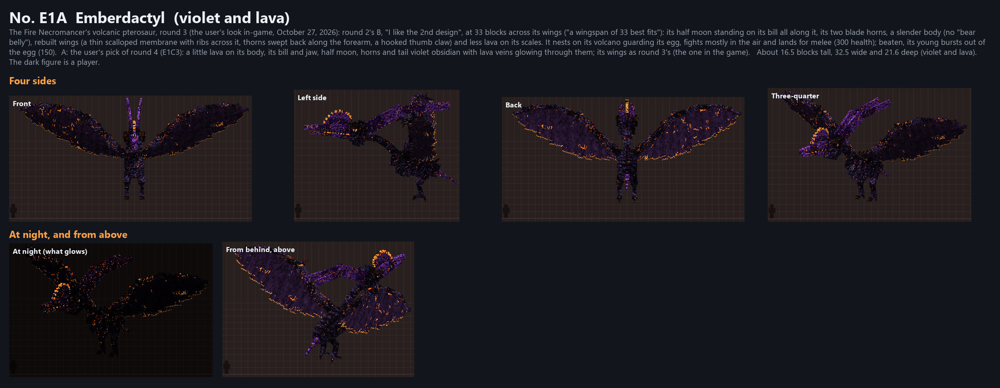
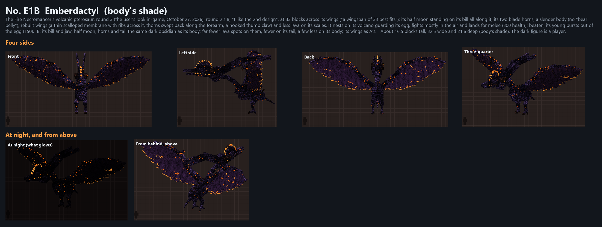
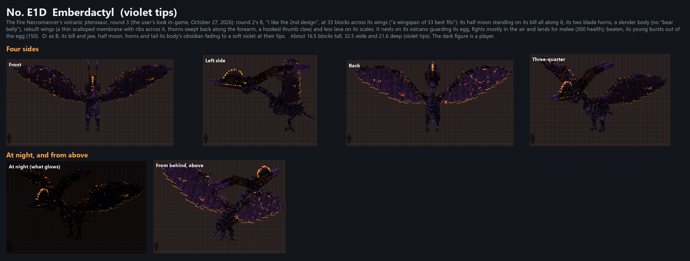

E1C hint of violet

After playing 0.3.0 (November 5, 2026) the user asked for its bill, horns and tail to be its body's shade, with far fewer lava spots on them, fewer on its tail and a few less on its body, its wings as they were. E1A was round 4's pick (E1C3); E1B-E1D the three shades. The user picked E1B, the body's shade ("e1b is the best"): it is now the only adult, E1A (the current page). All four side by side.


